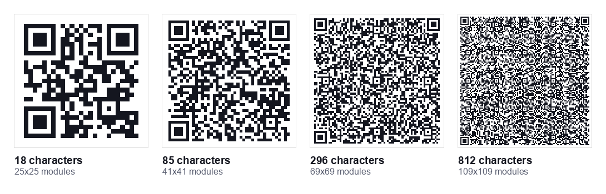
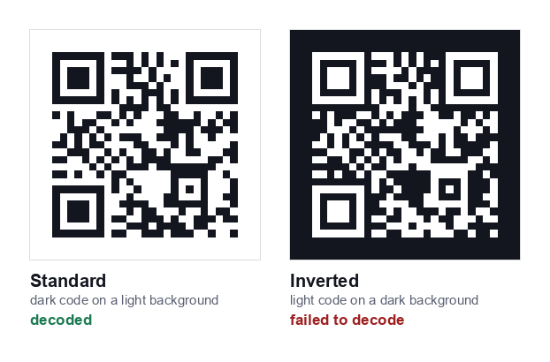

Most printed QR codes that fail do so for one reason: they were sized to fit a layout rather than sized to be scanned. The good news is that the maths is simple, and there is a single ratio that answers almost every question about print size.
The 10:1 rule
A QR code should be at least one tenth as wide as the distance it will be scanned from. Scanning from 30cm away? Print at 3cm. From two metres? Print at 20cm. From across a car park at ten metres? You need a metre wide code.
This ratio comes from how phone cameras resolve the individual squares (called modules) that make up the pattern. Below a certain angular size the camera cannot distinguish one module from the next, and the scan fails regardless of how good the printing is.
Two adjustments to the rule in practice: add a margin for error, because people do not stand at the ideal distance, and round up rather than down. A code that is slightly too big costs nothing; one that is slightly too small fails silently and you never find out.
Practical size table
| Where it goes | Scan distance | Minimum size | Comfortable size |
|---|---|---|---|
| Business card | 20 to 30cm | 2cm | 2.5cm |
| Restaurant table card | 30 to 50cm | 3cm | 4 to 5cm |
| Product packaging | 20 to 30cm | 2cm | 2.5 to 3cm |
| Flyer or leaflet | 30cm | 2.5cm | 3cm |
| A4 poster on a wall | 1m | 10cm | 12cm |
| Shop window | 1.5 to 2m | 15 to 20cm | 25cm |
| Vehicle livery | 3 to 5m | 30 to 50cm | 60cm |
| Billboard | 10m+ | 1m+ | 1.5m+ |
The absolute floor for any printed code is about 2cm per side. Below that, even close range scanning becomes unreliable on older phones.
Why data length changes the answer
Two codes printed at exactly the same size can behave completely differently, because the amount of data determines how many modules are packed into that area.
A short URL might produce a 25×25 module grid. A long vCard with an address and several phone numbers might produce a 57×57 grid. Printed at the same 3cm, the second code has modules less than half the width of the first, and scans far worse.
Shorter data, bigger modules, better scans. If a code must be small, reduce what it contains rather than hoping the printer resolves it.
Practical ways to shorten data: use a short URL rather than one with tracking parameters; drop optional vCard fields; keep text codes under 100 characters.
The quiet zone, the most broken rule
Every QR code needs clear space around it, called the quiet zone. The specification calls for a margin of four modules on all sides. In plain terms: leave a white border roughly as wide as four of the small squares in the pattern.
This is the single most common thing designers break, because an empty white margin looks like wasted space in a layout. It is not decoration, the scanner uses it to find where the code begins. A code cropped tight to its edge, or with text running right up against it, may not be detected at all.
Contrast, colour and finish
Contrast
Dark modules on a light background. Black on white is ideal. If you must use brand colours, keep the modules dark and the background light, never the reverse, and never a midtone on a midtone.
Inverted codes, light modules on a dark background, are readable by many modern scanners but not all. For anything printed at volume, do not risk it.
Finish
Matte beats gloss every time. Glossy lamination reflects overhead lighting straight into the camera, producing a bright patch across part of the code. This is a frequent cause of restaurant table cards that work in the afternoon and fail under evening lights.
Print method
Digital and offset printing both reproduce codes well at these sizes. Where problems appear is in low resolution processes, some embroidery, low DPI thermal receipt printers, and heavily textured stock. On textured or fabric surfaces, increase the size by 30 to 50% beyond the table above.
Error correction and why it is a tradeoff
QR codes include redundancy so they still scan when partly damaged. There are four levels, from roughly 7% recovery up to about 30%.
Higher error correction sounds strictly better, but it adds data, which adds modules, which makes each module smaller at a given print size. For clean indoor printing, standard levels give the best results. Raise it only for codes that will be exposed to wear, outdoor signage, packaging that gets scuffed, or codes with a logo placed over them.
Logos in the middle
A logo covers modules and relies on error correction to recover them. It works, within limits: keep the logo under about 20% of the code area, place it centrally, and always increase the print size when a logo is present.
For a code that must work first time in an unpredictable environment, a guest arriving at night, a customer in a dim restaurant, the plain version is measurably more reliable.
Test before the print run
Testing on screen is not testing. The two checks worth doing:
- Print one at final size on the actual stock, then scan it at the real distance, in the real lighting, with an ordinary phone, not the newest one in the office.
- Scan at an angle. People rarely hold a phone perfectly square to a poster. If it reads at 30 degrees off axis, it will survive real use.
Do this before ordering 500 copies, not after.
Checklist
- Size ≥ one tenth of scanning distance, minimum 2cm
- Quiet zone of four modules on every side
- Dark code, light background, high contrast
- Matte finish, not gloss
- Shortest possible data
- Test printed and scanned at real distance before the run
Generate your code at whatever size you need from our URL generator, WiFi generator, vCard generator or text generator, all free, all generated in your browser. The error correction documentation has the full technical detail if you need it.
Sizing for unusual surfaces
The table above assumes flat paper or card. Several common surfaces need adjustment:
- Curved surfaces: bottles, cups, tubes. Curvature distorts the pattern from the camera's viewpoint. Increase size by roughly 30%, and keep the code within the flattest available area rather than wrapping it around the curve.
- Fabric and embroidery: thread cannot resolve fine modules. Increase size substantially, keep the data extremely short, and test on the actual material before committing.
- Thermal receipt paper: low resolution and prone to fading. Keep codes above 2.5cm and keep the URL short.
- Etched or engraved surfaces: metal and wood rely on contrast from shadow rather than ink, which varies with lighting angle. Size up and test under the lighting where it will actually be used.
- Behind glass: shop windows add reflections. Increase size and consider placement away from direct light sources.
Digital displays are a different problem
A code on a screen, a TV in a lobby, a presentation slide, a phone showing a code to another phone, follows different rules. Screen brightness usually helps, but two things hurt:
- Screen refresh and camera shutter interaction can produce banding on some combinations. If a code will not scan off a screen, changing the display brightness often fixes it.
- Compression artefacts. A code embedded in a heavily compressed video or a low quality slide export loses module definition. Always export at high quality, and never let a code be resized by a slideshow to fit a placeholder.
For screens, a reasonable starting point is to make the code a substantial share of the screen height, roughly a sixth or more, for anything scanned from a few metres away, then test it at the real distance.
Two mistakes that survive all the checks
Scaling a raster image up
If you generate a code at 200 pixels and your designer scales it to fill a 20cm poster area, the result is a blurry code with soft module edges. Always generate at or above the final print resolution, for print, aim for at least 300 DPI at final size, meaning a 5cm code needs roughly 600 pixels.
Letting a layout tool "optimise" the image
Some design and web tools compress images aggressively or convert them to formats with lossy compression. A QR code is exactly the kind of high contrast, hard edged image that compression damages most visibly. Keep codes as PNG, never JPEG.
A quick checklist before printing
- Generated at 300 DPI or higher for the final print size
- Saved as PNG, never JPEG
- Quiet zone intact, nothing cropped or overlapping
- Dark modules on a light background
- Matte finish specified with the printer
- One test copy printed on the real stock and scanned at the real distance, at an angle, in the real lighting, on an older phone
That last line is the one that matters most. A single test print catches the kind of problem that is expensive to discover after a full run.

Those four codes are the same width on the page, but the grid behind them is not. Here is what we measured when generating them, and what each would mean printed at 3cm across:
| Data | Version | Grid | Module size at 3cm |
|---|---|---|---|
| 18 characters | 2 | 25 x 25 | 1.20mm |
| 85 characters | 6 | 41 x 41 | 0.73mm |
| 296 characters | 13 | 69 x 69 | 0.43mm |
| 812 characters | 23 | 109 x 109 | 0.28mm |
All four decoded correctly as digital images. The difference shows up in print: at 3cm, the 812 character code puts each module at 0.28mm, below the 0.4mm figure above, while the short one has over four times that to work with. Same printed square, very different odds of a first time scan.
Understanding versions and modules
Two terms explain most sizing behaviour, and knowing them makes the rest intuitive:
- Module: one small square in the pattern. Scanning works when the camera can resolve individual modules.
- Version: the grid size. Version 1 is 21×21 modules; each version up adds 4 modules per side, to version 40 at 177×177.
The version is chosen automatically based on how much data you encode. This is why data length and print size are the same problem viewed from two directions: at a fixed physical size, more data means a higher version, more modules, and therefore smaller modules.
A practical target: aim for modules of at least 0.4mm when printed at high quality, and 0.6mm or more for general use. Divide your intended code width by the number of modules per side to check.
Encoding modes and why they matter for size
QR codes store different character types with different efficiency, which directly affects how dense your code becomes:
| Mode | Characters | Efficiency |
|---|---|---|
| Numeric | Digits only | Most efficient, most data per module |
| Alphanumeric | Uppercase, digits, a few symbols | Efficient |
| Byte / UTF-8 | Mixed case, most URLs, accents | Less efficient |
| Kanji | Japanese characters | Specialised |
A practical consequence: a URL written entirely in uppercase can encode more efficiently than the same URL in mixed case, because uppercase fits alphanumeric mode. Domain names are case insensitive, so HTTPS://EXAMPLE.COM/MENU works identically to the lowercase version while producing a slightly simpler code. It looks unusual, but for a code that must be small, it is a free improvement.

We tested this rather than assuming it. Both codes above encode exactly the same URL. The standard version decoded correctly; the inverted version was not detected. Some scanners handle inversion and some do not, which is the whole problem, you cannot tell which one your reader is holding.
Colour, inversion and brand constraints
Designers frequently ask whether a code can match brand colours. The honest answer is "within narrow limits":
- Dark modules on a light background is the only universally safe combination.
- Coloured modules work if the colour is genuinely dark, measure contrast rather than judging by eye. Aim for a contrast ratio of at least 4:1 against the background.
- Inverted codes (light on dark) are read by many modern scanners but not all older ones. Never use them for anything printed at volume.
- Gradients reduce contrast unpredictably across the pattern and should be avoided.
- Transparent backgrounds are a common source of failure, the code ends up over a photo or a coloured panel. Always place codes on a solid light background.